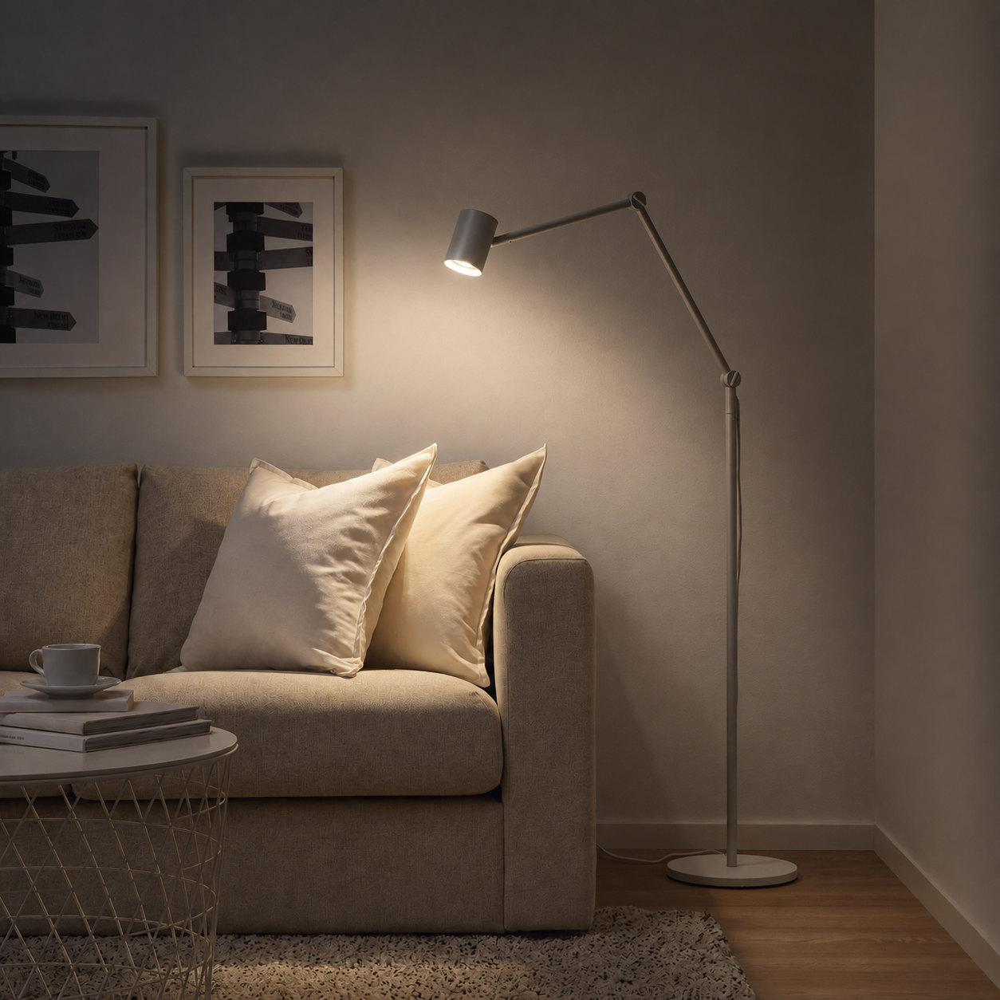
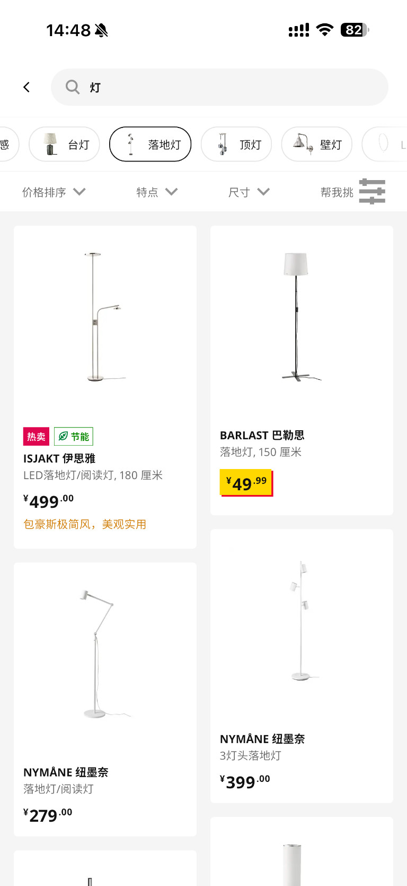
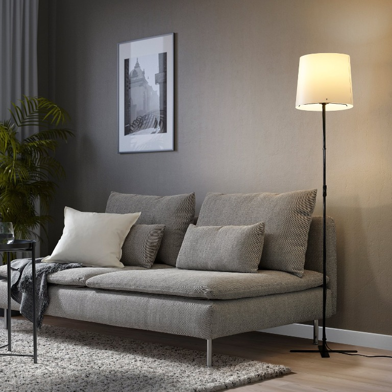
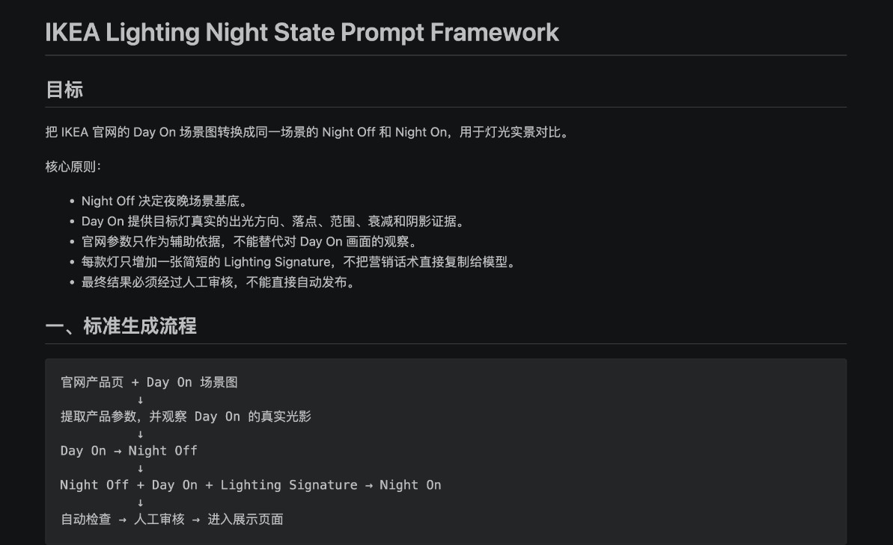
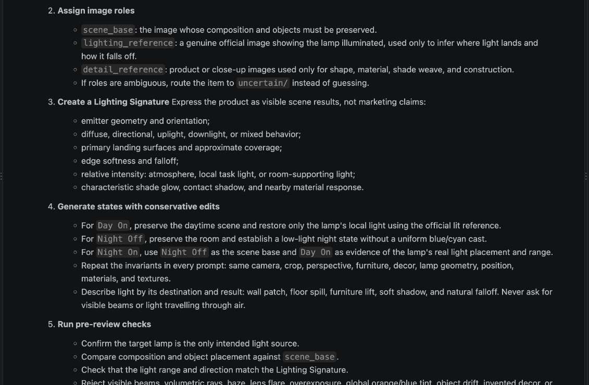
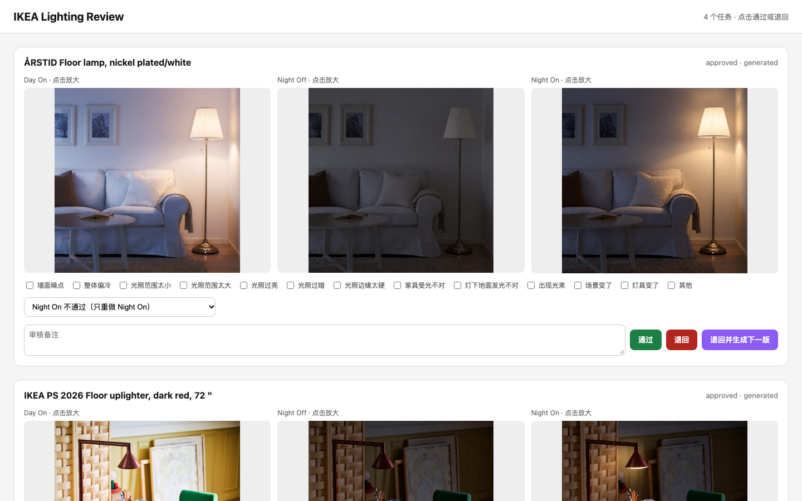

从官网拿到真实输入
确定商品范围，收集场景图、产品图、SKU 和基础参数。
官网分类页 · 图片 · 参数
AI Workflow · AIGC · Human-in-the-loop
IKEA 线上灯具页能清楚展示产品，却很难还原线下样板间里灯光改变空间的感觉。 我先用轻量 Demo 验证场景化展示，再把手工生图过程推进成可重复生成、审核和交付的本地工作流。

正在加载 16 款灯具体验…
01 · PROJECT BRIEF
当前购物体验 线上 PLP 多是白底图。用户能看清产品的外形和价格，却看不到灯亮起来后会照亮哪里， 也很难想象它放进自己家里是什么感觉。
为什么值得改变 此前 APP 做过一次落地灯场景图实验。相比白底图，场景图版本的加购和转化都更高。
我的假设与目标 我的假设是，如果用户能在同一商品里切换白天、夜晚和开关灯状态，就能更直接地感受灯光如何改变空间。 所以我先做一个轻量、可交互的 Demo，看看这种体验是否值得继续做下去。

白底图能展示商品，却看不到灯光如何改变空间。
02 · FROM DEMO TO SYSTEM
先用 8 款落地灯做出可以切换状态的交互 Demo。
每增加一个商品，都要重新找图、写 Prompt、检查、下载、改名和整理。
问题不再是多生成几张图，而是怎样把判断变成可重复、可审核的工作流。
03 · HOW THE SYSTEM WORKS
每个商品从官网真实素材开始，依次完成任务准备、Night Off / Night On 生成、人工审核和归档；只有审核通过的版本才进入 Demo。
确定商品范围，收集场景图、产品图、SKU 和基础参数。
Python 整理素材和命名；每个商品拥有独立工作区与版本记录。
先生成 Night Off，再结合原图生成 Night On。
问题版本退回重做；通过版本自动归档，再进入 Day / Night 展示。
脚本、图像模型和文件系统负责重复动作；我负责判断素材是否真实、哪里需要重做，以及什么可以发布。
04 · HOW THE IMAGES WERE MADE
我先用官网场景图生成 Night Off，锁定同一个房间的夜晚环境；再把原图作为光照证据生成 Night On，只恢复目标灯真实的落点、范围和阴影。

先单独解决“夜晚环境”，避免模型同时改场景和灯光。
一张图锁定夜景，一张图提供光照位置、范围和阴影。
如果结果有问题，我能继续判断它来自夜景生成，还是开灯后的光效。
05 · SKILL & REVIEW LOOP
我先用 Prompt Framework 固定生成顺序和图片角色，再把输入来源、Lighting Signature、检查、版本和发布边界整理成 Skill；人工审核中反复出现的问题再更新为下一版规则。

先固定 Day On → Night Off → Night On 的顺序、图片角色与人工审核边界。

再加入输入来源、Lighting Signature、检查、版本和发布规则，让方法可以继续复用。

这是一个人工审核系统：同屏比较 Day On、Night Off 和 Night On，逐项标记场景、商品结构与光效问题，决定通过或退回哪一个状态，并记录审核备注、重做对象和版本。
先定位问题场景、商品结构和灯光效果分开记录。
先做局部修正单个商品的问题不立刻改成全局规则。
重复出现再更新 Skill下一轮任务从新的规则继续执行。
06 · OUTPUT
16 款灯具的 Day / Night 交互 Demo。
三态生图方法被保存为 Lighting Skill。
真实新增商品曾走完生成、审核与发布链路。